.
.
Title Page
Contents
1. Introduction
2. Key Idea
3. Root finding in one dimension
4. Linear equations
5. Numerical integration
6. First order ordinary differential equations
7. Higher order ordinary differential equations
8. Partial differential equations
Solving equation of the form Ax = r is central to many numerical algorithms. There are a number of methods which may be used, some algebraically correct, while others iterative in nature and providing only approximate solutions. Which is best will depend on the structure of A, the context in which it is to be solved and the size compared with the available computer resources.
This is what you would probably do if you were computing the solution of a non-trivial system by hand. For the system
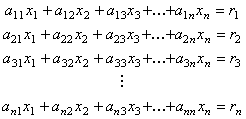 , | (27) |
we first divide the first row by a11 and then subtract a21 times the new first row from the second row, a31 times the new first row from the third row … and an1 times the new first row from the nth row. This gives
| . | (28) |
By repeating this process for rows 3 to n, this time using the new contents of element 2,2, we gradually replace the region below the leading diagonal with zeros. Once we have
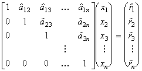 | () | |
the final solution may be obtained by back substitution.
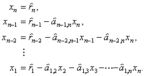 | (30) | |
If the arithmetic is exact, and the matrix A is not singular, then the answer computed in this manner will be exact (provided no zeros appear on the diagonal - see below). However, as computer arithmetic is not exact, there will be some truncation and rounding error in the answer. The cumulative effect of this error may be very significant if the loss of precision is at an early stage in the computation. In particular, if a numerically small number appears on the diagonal of the row, then its use in the elimination of subsequent rows may lead to differences being computed between very large and very small values with a consequential loss of precision. For example, if a22-(a21/a11)a12 were very small, 10-6, say, and both a23-(a21/a11)a13 and a33-(a31/a11)a13 were 1, say, then at the next stage of the computation the 3,3 element would involve calculating the difference between 1/10-6=106 and 1. If single precision arithmetic (representing real values using approximately six significant digits) were being used, the result would be simply 1.0 and subsequent calculations would be unaware of the contribution of a23 to the solution. A more extreme case which may often occur is if, for example, a22-(a21/a11)a12 is zero - unless something is done it will not be possible to proceed with the computation!
A zero value occuring on the leading diagonal does
not mean the matrix is singular. Consider, for example, the system
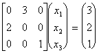 , | (31) | |
the solution of which is obviously x1 = x2 = x3 = 1. However, if we were to apply the Gauss Elimination outlined above, we would need to divide through by a11 = 0. Clearly this leads to difficulties!
One of the ways around this problem is to ensure that small values (especially zeros) do not appear on the diagonal and, if they do, to remove them by rearranging the matrix and vectors. In the example given in ( 31 ) we could simply interchange rows one and two to produce
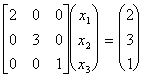 , | (32) | |
or columns one and two to give
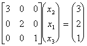 , | (33) | |
either of which may then be solved using standard Guass Elimination.
More generally, suppose at some stage during a calculation we have
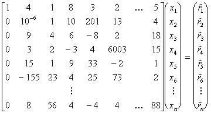 | (34) | |
where the element 2,5 (201) is numerically the largest value in the second row and the element 6,2 (155) the numerically largest value in the second column. As discussed above, the very small 10-6 value for element 2,2 is likely to cause problems. (In an extreme case we might even have the value 0 appearing on the diagonal - clearly something must be done to avoid a divide by zero error occurring!) To remove this problem we may again rearrange the rows and/or columns to bring a larger value into the 2,2 element.
In partial or column pivoting, we rearrange the rows of the matrix and the right-hand side to bring the numerically largest value in the column onto the diagonal. For our example matrix the largest value is in element 6,2 and so we simply swap rows 2 and 6 to give
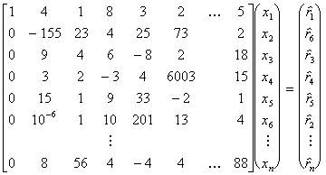 . | (35) | |
Note that our variables remain in the same order which simplifies the implementation of this procedure. The right-hand side vector, however, has been rearranged. Partial pivoting may be implemented for every step of the solution process, or only when the diagonal values are sufficiently small as to potentially cause a problem. Pivoting for every step will lead to smaller errors being introduced through numerical inaccuracies, but the continual reordering will slow down the calculation.
The philosophy behind full pivoting is much the same as that behind partial pivoting. The main difference is that the numerically largest value in the column or row containing the value to be replaced. In our example above element the magnitude of element 2,5 (201) is the greatest in either row 2 or column 2 so we shall rearrange the columns to bring this element onto the diagonal. This will also entail a rearrangement of the solution vector x. The rearranged system becomes
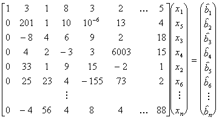 . | (36) | |
The ultimate degree of accuracy can be provided by rearranging both rows and columns so that the numerically largest value in the submatrix not yet processed is brought onto the diagonal. In our example above, the largest value is 6003 occurring at position 4,6 in the matrix. We may bring this onto the diagonal for the next step by interchanging columns one and six and rows two and four. The order in which we do this is unimportant. The final result is
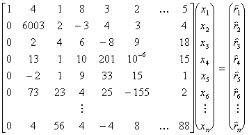 . | (37) |
Again this process may be undertaken for every step, or only when the value on the diagonal is considered too small relative to the other values in the matrix.
If it is not possible to rearrange the columns or rows to remove a zero from the diagonal, then the matrix A is singular and no solution exists.
A frequently used form of Gauss Elimination is LU Factorisation also known as LU Decomposition or Crout Factorisation. The basic idea is to find two matrices L and U such that LU = A, where L is a lower triangular matrix (zero above the leading diagonal) and U is an upper triangular matrix (zero below the diagonal). Note that this decomposition is underspecified in that we may choose the relative scale of the two matrices arbitrarily. By convention, the L matrix is scaled to have a leading diagonal of unit values. Once we have computed L and U we need solve only Ly=b then Ux=y, a procedure requiring O(n2) operations compared with O(n3) operations for the full Gauss elimination. While the factorisation process requires O(n3) operations, this need be done only once whereas we may wish to solve Ax=b for with whole range of b.
Since we have decided the diagonal elements lii in the lower triangular matrix will always be unity, it is not necessary for us to store these elements and so the matrices L and U can be stored together in an array the same size as that used for A. Indeed, in most implementations the factorisation will simply overwrite A.
The basic decomposition algorithm for overwriting A with L and U may be expressed as
# Factorisation
FOR i=1 TO n
FOR p=i TO n
|
This algorithm assumes the right-hand side(s) are initially stored in the same array structure as the matrix and are positioned in the column(s) n+1 (to n+m for m right-hand sides). To improve the efficiency of the computation for right-hand sides known in advance, the forward substitution loop may be incorporated into the factorisation loop.
Figure 10 indicates how the LU Factorisation process works. We want to find vectors liT and uj such that aij = liTuj. When we are at the stage of calculating the ith element of uj, we will already have the i nonzero elements of liT and the first i1 elements of uj. The ith element of uj may therefore be chosen simply as uj(i) = aij liTujwhere the dot-product is calculated assuming uj(i) is zero.
As with normal Gauss Elimination, the potential occurrence of small or zero values on the diagonal can cause computational difficulties. The solution is again pivoting - partial pivoting is normally all that is required. However, if the matrix is to be used in its factorised form, it will be essential to record the pivoting which has taken place. This may be achieved by simply recording the row interchanges for each i in the above algorithm and using the same row interchanges on the right-hand side when using L in subsequent forward substitutions.
The LU Factorisation may readily be modified to account for banded structure such that the only non-zero elements fall within some distance of the leading diagonal. For example, if elements outside the range ai,i-b to ai,i+b are all zero, then the summations in the LU Factorisation algorithm need be performed only from k=i or k=i+1 to k=i+b. Moreover, the factorisation loop FOR q=i+1 TO n can terminate at i+b instead of n.
One problem with such banded structures can occur if a (near) zero turns up on the diagonal during the factorisation. Care must then be taken in any pivoting to try to maintain the banded structure. This may require, for example, pivoting on both the rows and columns as described in section4.2.2 .
Making use of the banded structure of a matrix can save substantially on the execution time and, if the matrix is stored intelligently, on the storage requirements. Software libraries such as NAG and IMSL provide a range of routines for solving such banded linear systems in a computationally and storage efficient manner.
A tridiagonal matrix is a special form of banded matrix where all the elements are zero except for those on and immediately above and below the leading diagonal (b=1). It is sometimes possible to rearrange the rows and columns of a matrix which does not initially have this structure in order to gain this structure and hence greatly simplify the solution process. As we shall see later in sections 6 to8 , tridiagonal matrices frequently occur in numerical solution of differential equations.
A tridiagonal system may be written as
| (38) |
for i=1,…,n. Clearly x-1 and xn+1 are not required and we set a1=cn=0 to reflect this. Solution, by analogy with the LU Factorisation, may be expressed as
# Factorisation FOR i=1 TO n bi = bi - aici-1 ci = ci/bi NEXT i # Forward Substitution FOR i=1 TO n ri = (ri - airi-1)/bi NEXT i # Back Substitution FOR i=n-1 TO 1 ri = ri - ciri+1 NEXT i |
There are a number of other methods for solving general linear systems of equations including approximate iterative techniques. Many large matrices which need to be solved in practical situations have very special structures which allow solution - either exact or approximate - much faster than the general O(n3) solvers presented here. We shall return to this topic in section 8.1 where we shall discuss a system with a special structure resulting from the numerical solution of the Laplace equation.
If the matrix A contains m rows and n columns, with m > n, the system is probably over-determined (unless there are m-n redundant rows). While the solution to Ax = r will not exist in an algebraic sense, it can be valuable to determine the solution in an approximate sense. The error in this approximate solution is then e = Ax-r. The approximate solution is chosen by optimising this error in some manner. Most useful among the classes of solution is the Least Squares solution. In this solution we minimise the residual sum of squares, which is simply rss=eTe. Substituting for e we obtain
| (39) |
and setting
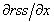
to zero gives
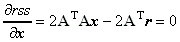 . | (40) |
Thus, if we solve the m by m problem ATAx = ATr, the solution vector x will give us the solution in a least squares sense.
Warning: The matrix ATA is often poorly conditioned (nearly singular) and can lead to significant errors in the resulting Least Squares solution due to rounding error. While these errors may be reduced using pivoting in combination with Gauss Elimination, it is generally better to solve the Least Squares problem using the Householder transformation, as this produces less rounding error, or better still by Singular Value Decomposition which will highlight any redundant or nearly redundant variables in x.
The Householder transformation avoids the poorly conditioned nature of ATA by solving the problem directly without evaluating this matrix. Suppose Q is an orthogonal matrix such that
| (41) |
where I is the identity matrix and Q is chosen to transform A into
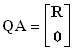 , | (42) | |
where R is a square matrix of a size n and 0 is a zero matrix of size mn by n. The right-hand side of the system QAx = Qr becomes
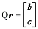 , | (43) | |
where b is a vector of size n and c is a vector of size mn.
Now the turning point (global minimum) in the residual sum of squares ( 40 ) occurs when
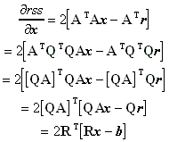 | (44) | |
vanishes. For a non-trivial solution, that occurs when
| (45) | |
This system may be solved to obtain the least squares solution x using any of the normal linear solvers discussed above.
Further discussion of these methods is beyond the scope of this course.
If the matrix A contains m rows and n columns, with m > n, the system is under determined. The solution maps out a n-m dimensional subregion in n dimensional space. Solution of such systems typically requires some form of optimisation in order to further constrain the solution vector.
Linear programming represents one method for solving
such systems. In Linear Programming, the solution is optimised
such that the objective function z=cTx
is minimised. The "Linear" indicates that the underdetermined
system of equations is linear and the objective function is linear
in the solution variable x.
The "Programming" arose to enhance the chances of obtaining
funding for research into this area when it was developing in
the 1960s.
Goto next document (Integration)
Start of this section
Title Page
Contents
 NEXT q
NEXT i
# Back Substitution
FOR i=n-1 TO 1
FOR q=n+1 TO n+m
NEXT q
NEXT i
# Back Substitution
FOR i=n-1 TO 1
FOR q=n+1 TO n+m